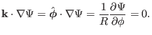

Next: tmp check! Up: Misc contents Previous: Ballooning transformation
Note that, on both an irrational surface and a rational surface, there are
infinite number of magnetic field lines that are not connected with each other
(it is wrong to say there is only one magnetic field line on a irrational
surface). Sine
, the value  is a
constant along any one of the magnetic field lines. Now comes the question:
whether the values of
is a
constant along any one of the magnetic field lines. Now comes the question:
whether the values of  on different field lines are equal to each other?
To answer this question, we can choose a direction different from
on different field lines are equal to each other?
To answer this question, we can choose a direction different from
 on the magnetic surface and examine whether
on the magnetic surface and examine whether  is constant or not along
this direction, i.e, whether
equals zero or
not, where
is the chosen direction. For axsiymmetric magnetic
surfaces, it is ready to see that
is a
direction on the magnetic surface and it is usually not identical with
. Then we obtain
is constant or not along
this direction, i.e, whether
equals zero or
not, where
is the chosen direction. For axsiymmetric magnetic
surfaces, it is ready to see that
is a
direction on the magnetic surface and it is usually not identical with
. Then we obtain
|  | (527) |
[check***As discussed in Sec. 2.1, the force balance equation of
axisymmetric plasma requires that
. From this
and the fact
, we conclude that  is a
function of
is a
function of  , i.e.,
, i.e.,
 . However, this reasoning is not
rigorous. Note the concept of a function requires that a function can not be a
one-to-more map. This means that
. However, this reasoning is not
rigorous. Note the concept of a function requires that a function can not be a
one-to-more map. This means that
 indicates that the values of
indicates that the values of
 must be equal on two different magnetic field lines that have the same
value of
must be equal on two different magnetic field lines that have the same
value of  . However, the two equations
and
do not require this constraint. To
examine whether this constraint removes some equilibria from all the possible
ones, we consider a system with an point. Inside one of the magnetic
islands, we use
. However, the two equations
and
do not require this constraint. To
examine whether this constraint removes some equilibria from all the possible
ones, we consider a system with an point. Inside one of the magnetic
islands, we use
yj 2018-03-09